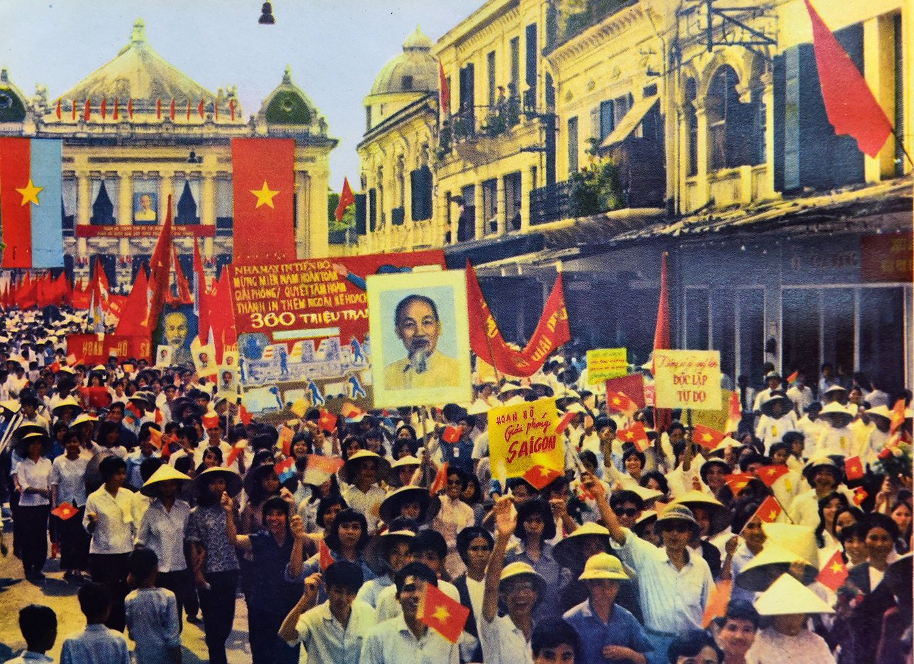
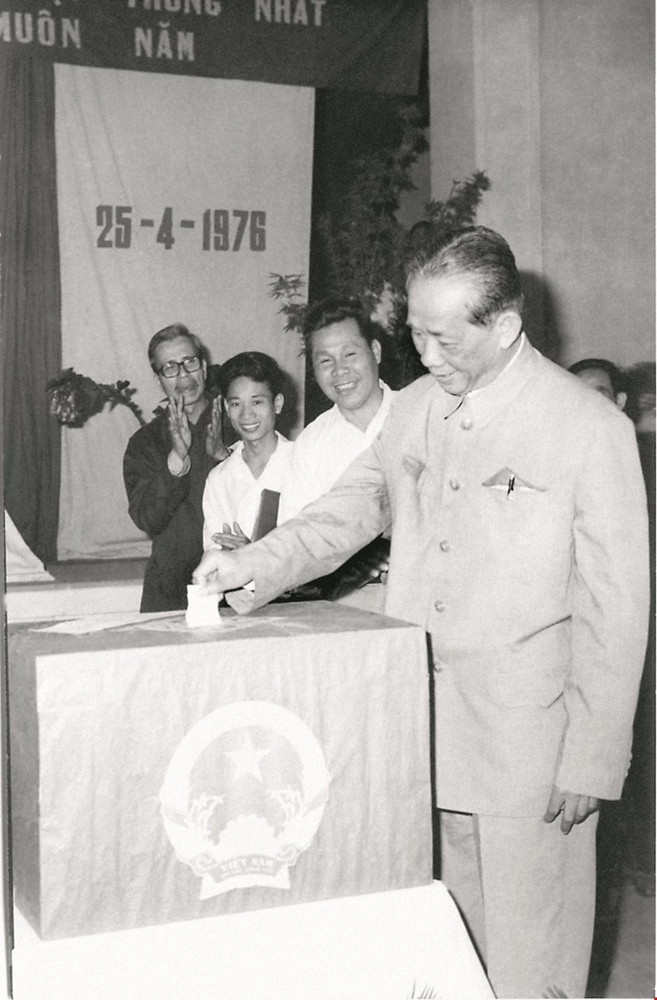
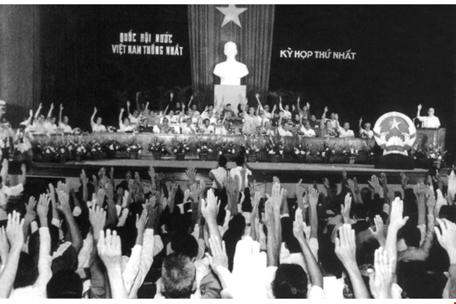
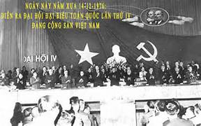
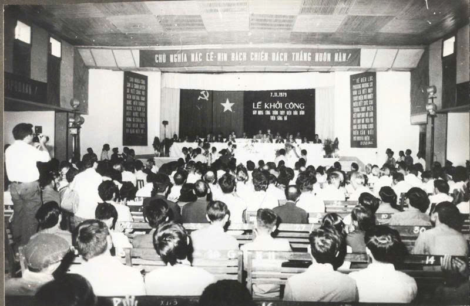
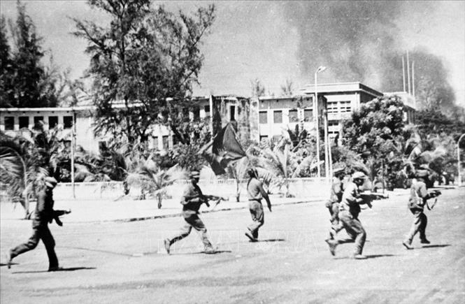
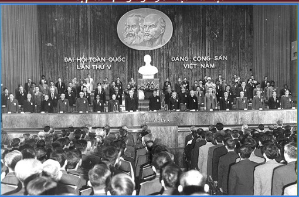
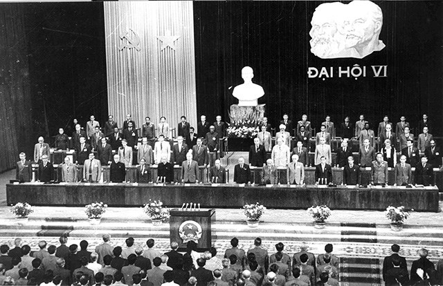

Đất nước hoàn toàn thống nhất
Đại thắng mùa Xuân mở ra kỷ nguyên độc lập, thống nhất và cả nước cùng đi lên chủ nghĩa xã hội.

DÒNG THỜI GIAN
1975-1986 là hành trình vừa khôi phục đất nước, vừa bảo vệ Tổ quốc, vừa tìm kiếm một cách phát triển mới.
CHƯƠNG I · 1975-1981
Sau thống nhất, đất nước bước vào thời kỳ quá độ lên chủ nghĩa xã hội trong điều kiện nền kinh tế kiệt quệ, cơ sở vật chất bị chiến tranh tàn phá và đời sống nhân dân nhiều thiếu thốn.
Đại thắng mùa Xuân mở ra kỷ nguyên độc lập, thống nhất và cả nước cùng đi lên chủ nghĩa xã hội.

Một dấu mốc hoàn thành thống nhất đất nước về mặt Nhà nước, tạo sức mạnh tổng hợp cho công cuộc xây dựng.

Quốc hội quyết định tên nước là Cộng hòa Xã hội chủ nghĩa Việt Nam.

Đề ra kế hoạch 5 năm 1976-1980, tập trung hàn gắn vết thương chiến tranh và xây dựng cơ sở vật chất.

Một công trình trọng điểm trong quá trình khôi phục sản xuất và phát triển năng lượng.

Khoán sản phẩm đến nhóm và người lao động, bước thử nghiệm quan trọng để khơi dậy động lực sản xuất nông nghiệp.


NÔNG NGHIỆP
Chỉ thị 100 tạo quyền chủ động hơn cho người lao động và trở thành một trong các tiền đề thực tiễn của Đổi mới.
BẢO VỆ TỔ QUỐC
Trong giai đoạn đầu sau thống nhất, Việt Nam phải tiến hành các cuộc chiến tranh chính nghĩa để bảo vệ chủ quyền, toàn vẹn lãnh thổ và làm tròn nghĩa vụ quốc tế.
Quân và dân Việt Nam đánh trả các cuộc xâm lấn, giúp nhân dân Campuchia thoát khỏi chế độ diệt chủng.

Quân và dân các tỉnh biên giới kiên cường chiến đấu để bảo vệ độc lập, chủ quyền và toàn vẹn lãnh thổ.

CHƯƠNG II · 1982-1986
Khủng hoảng kinh tế - xã hội đặt ra yêu cầu phải đổi mới cách quản lý, ưu tiên nông nghiệp, hàng tiêu dùng và hàng xuất khẩu.
Đại hội nhìn nhận những yếu kém của nền kinh tế, xác định nông nghiệp là mặt trận hàng đầu.

Chủ trương xóa bỏ cơ chế tập trung quan liêu, bao cấp, chuyển sang hạch toán và kinh doanh xã hội chủ nghĩa.

Kết luận về ba vấn đề kinh tế lớn: cơ cấu sản xuất, cải tạo xã hội chủ nghĩa và cơ chế quản lý.

Đại hội đề ra đường lối Đổi mới toàn diện, nhìn thẳng vào sự thật và lấy hiệu quả, đời sống nhân dân làm thước đo.

TIẾP TỤC KHÁM PHÁ